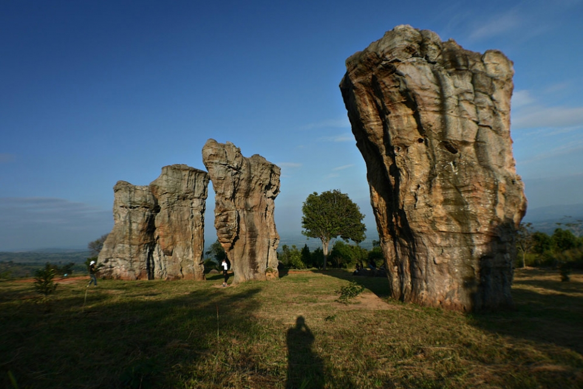

เป็นอีกแหล่งท่องเที่ยวหนึ่งที่ถือว่ามีความงดงามทางธรรมชาติไม่แพ้ทุ่งดอกกระเจียวงาม ซึ่งตั้งอยู่ใน เขตอุทยานแห่งชาติภูแลนคา บริเวณบ้านวังคำแคน หมู่ 9 ตำบลท่าหินโงม อำเภอเมือง จังหวัดชัยภูมิเดิมพื้นที่ แถวนี้ เป็นป่า ต่อมาได้มีคนมาบุกเบิกทำไร่และก็เห็นมีก้อนหินขนาดใหญ่อยู่ทั่วไปแต่ ก็ไม่ได้สนใจอะไร ที่ไร่ มันสำปะหลัง (ในสมัยนั้น) แต่จากเสียงบอกเล่า มีคนเคยเห็นว่าแปลกประหลาดมาก ก็คือก้อนหินใหญ่ 5 ก้อน ที่ในทุกคืนวันพระ (15 ค่ำ, 8 ค่ำ) จะมีแสง สีขาวส่องขึ้นมา คนเฒ่าคนแก่สมัยนั้น เลยเรียกที่นี่ว่า มอหินขาว สโตนเฮนจ์เมืองไทย“เสาหินและแท่งหิน ที่มอหินขาว ส่วนใหญ่ เป็นหินทรายสีขาว นอกจากนี้ก็ยังมี หินทรายแป้ง หินโคลน หินทรายสีม่วง หากมาท่องเที่ยวในฤดูฝน นอกจากนักท่องเที่ยว จะได้ พบเห็น ประติมา้กรรมทางธรรมชาติที่สวยงามของเสาหินแล้ว ยังได้พบดอกไม้ป่าที่บ้านสะพรั่งอยู่ทั่วมอหินขาวดูแล้ว เป็นภาพที่ สวยงามและน่าชมนัก หากคุณได้เข้ามาสัมผัสมนต์เสน่ห์แห่งป่าเขาที่นี่แล้วจะชวนคุณหลงใหลมิรู้ลืมจน”มอหินขาว” แห่งนี้เคย ได้รับการคัดเลือกให้เป็นสถานที่ถ่ายทำภาพยนตร์ของท่านมุ้ย เรื่องพระนเรศวรมหาราช มาแล้ว นี่คืออีกหนึ่งความท้าทายของ นักแคมป์ปิ้งไม่ควรพลาดได้มาพิสูจน์กัน